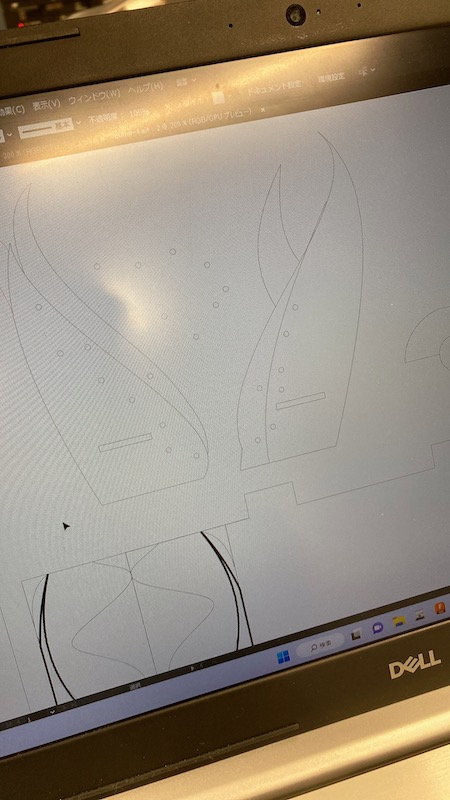
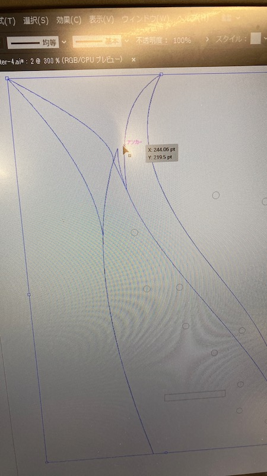
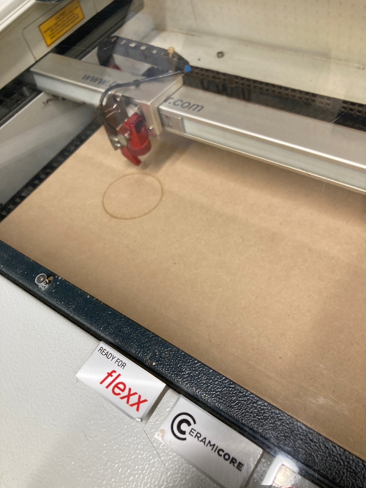

ディスプレイボード
私が作ろうと思ったのは飾るための台である。ちょうどもうすぐアースラのグッズが来るので、
それにちなんだモチーフにしようと思ってデザインを考えた。
考えるべきところは、板を組み合わせる部分の寸法である。寸法を指定して線分を追加することができる。
Macのキーボードだと、１のキーの下にある→のようなキーで寸法を指定する辺を変えることができる。
まず規定の大きさの枠を作って、その中で設計をした。

土台にした時にきちんと水平に立つように、下から何cmのところに組み立てる部分を作るかを指定して作る。
あとはやってみないとわからないので、とりあえずdxfファイルで保存。
dxfファイル
これをイラストレーターで違うデータにするところができませんでした。

できなかったところは
- fusion360で一つのレイヤーになっていてもイラストレーターだとなっていなかった
- ジョイントを実行すると余計な直線が出てくる（画像参照）
- 全体を下書きのレイヤーとして上からなぞることにした時、思った通りの線分が書けない
- アウトラインだけを抽出すること

↑参考画像
曲線ばかりのところに斜線が入っている。
いつも作品が思うようにできないのであまり難しく考えずに自分が単純にいい！とおもうものにしたつもりだったけどまたうまくできなかった。
モチーフが一緒のもので統一させて物を集めるのが好きだから、自分で作れたら良いと思ったので今回の作品にした。（できなかったけど）
参考にしたサイト
- 超基本fusion360 スケッチ③
- Illustrator（イラストレーター）でのレーザーカッター用データの作り方 20230118更新
最終課題でレーザーカッターを使用しました。



自分用のメモ書き程度ですが手順を、、
USBにイラレで整えたデータを入れてレーザーカッターのpcに接続する。
→pcのイラレで線分の分解や結合を行い、一回の動作で切り出すパーツごとにレイヤーで纏めたりなどする。
→一度印刷から保存、もう一度印刷でプレビュー見ながら調節、保存
→レーザーカッターのアプリで先ほど保存したデータを出す
→レーザーカッターの高さと素材の角にポイントを合わせる調節をする。
→pcの方でポイントに左上がぴったりつくようにデータを動かす。
→プレビューを見て、印刷時間などを確認する。黒が彫刻、赤がカットにかかる時間。線があるのに０秒だったりすれば直す。
→何もないところをダブルクリック、素材を適切なものを選ぶ。（カットする力を選んでいる）
→実行！